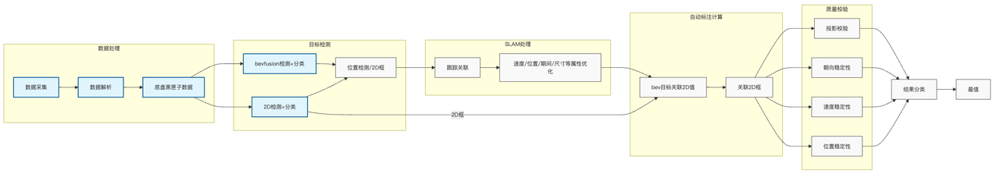
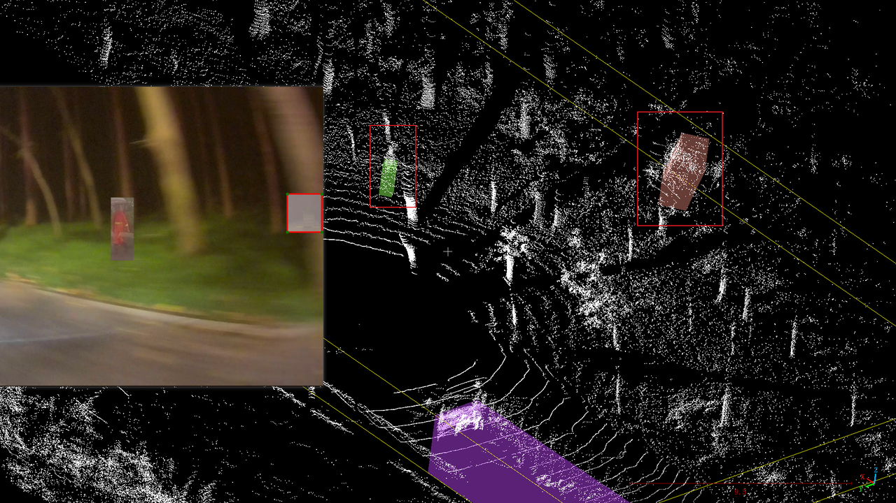
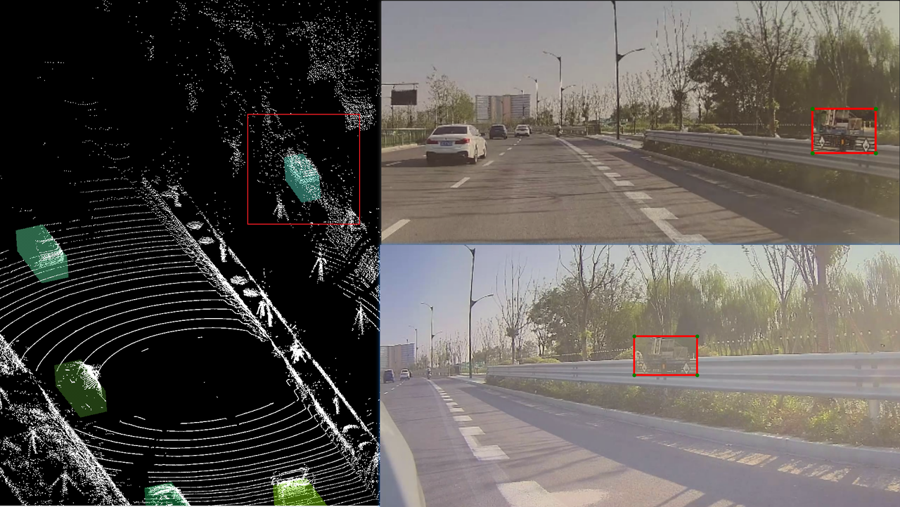
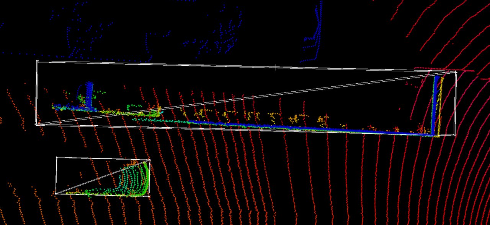
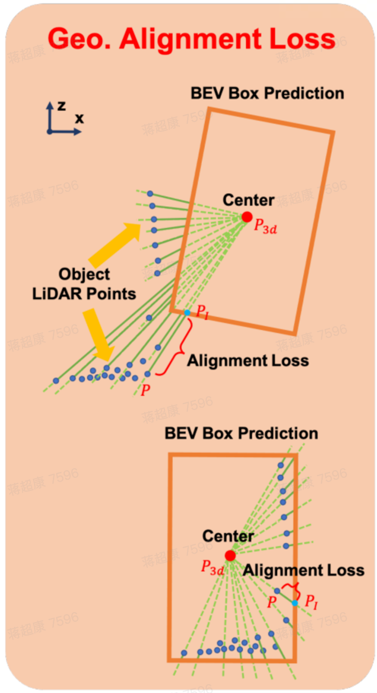
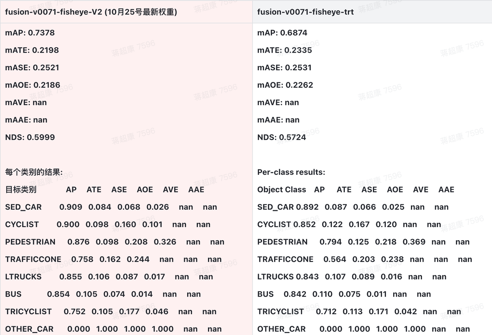
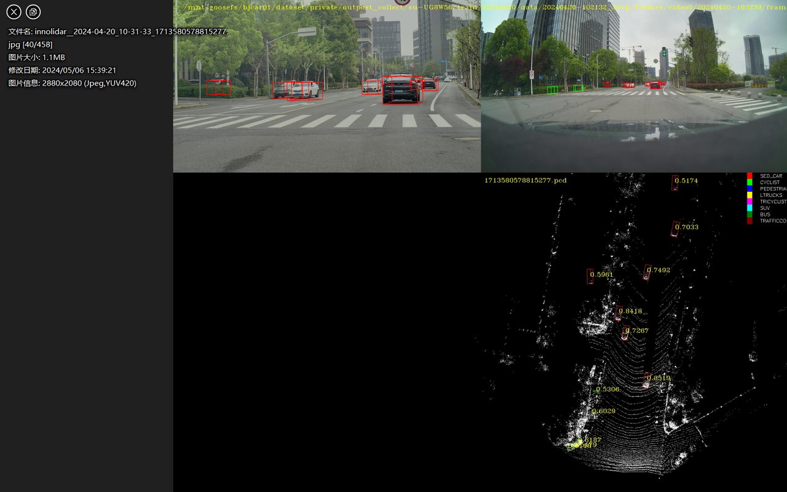
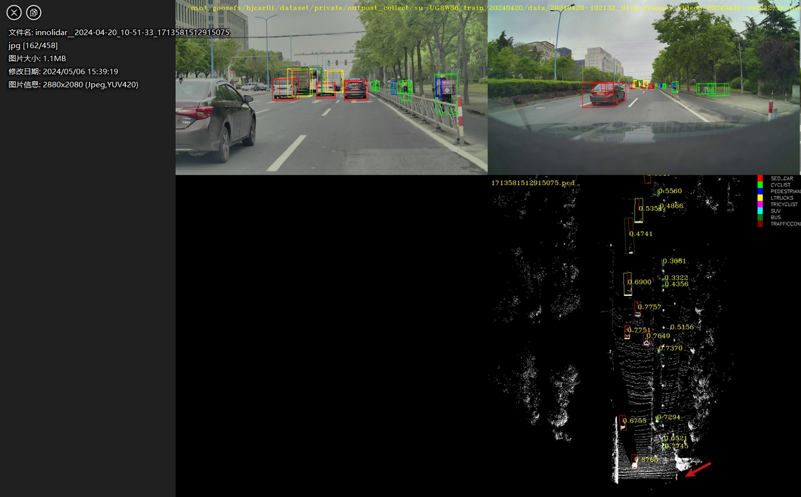
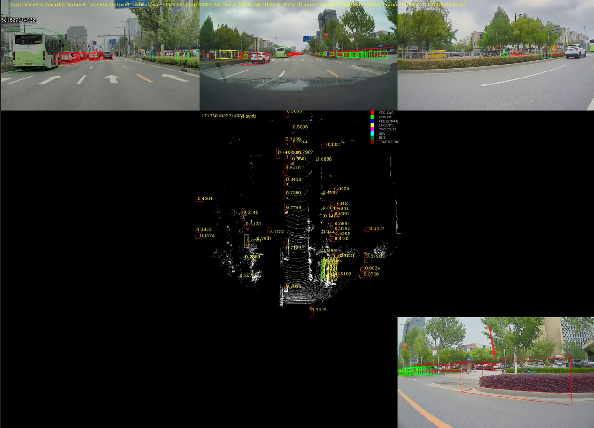

4D自动标注与3D纯LiDAR检测项目
融合自动标注系统与高效3D检测模型，提升VRU识别与检测精度
1. 4D自动标注系统
1.1 任务挑战
几乎无法获取逐点的3D速度或者3D位移GT
目前开源代码中没有一个可以用来作为baseline的3D场景流估计网络
由于耗时非常高，而且有非常多复杂的算子
多种算子不支持
当前网络能够处理的点数有限
1.2 主要工作
构建3D场景流训练集
构建并维护两种3D场景流估计网络

4D自动标注系统Pipeline
1.3 VRU召回率提升
为了提升VRU（易受伤害交通参与者）的召回率，我们在数据层面和模型层面进行了多项优化：
1.3.1 数据层面优化
3D物体数据增强：
通过 Copy-Paste 技术，将现有数据中的3D物体复制粘贴到其他场景中，增强训练数据的多样性和鲁棒性。

3D物体数据增强1

3D物体数据增强2
引入点云反射率特征：
在Voxel中加入点云的反射率信息，提升模型对物体表面材质和特性的感知能力。
增加人工标注数据：
重点扩充与 VRU 和 超长挂车相关的标注数据，增强模型对这些关键目标的识别能力。
1.3.2 模型层面优化
提高BEV分辨率：
增加BEV (Bird's Eye View) 的特征图分辨率，提升模型在不同尺度下的目标感知能力。
适配不同感知范围：
针对210米内不同区域的感知需求，优化模型结构，使其更高效地适应近、中、远距离目标的检测。
1.3.3 损失函数层面优化
引入几何对齐损失（Geometric Alignment Loss）：
通过几何约束的方式，精细优化预测框的尺寸和角度，提高检测框的精度。

需要几何对齐损失的场景

几何对齐损失
1.4 在内部数据集上的部分指标

指标示例
1.5 可视化示例
自动标注可视化
2. 3D纯LiDAR物体检测
2.1 主要负责内容
数据集适配与优化
模型迭代优化
问题识别与解决
系统性分析
持续改进循环
2.1.1 数据集适配与优化
将内部数据集转换为模型所需格式
建立数据处理pipeline
确保数据质量和标注准确性
2.1.2 模型迭代优化
基础模型架构调整
参数优化与实验
性能指标监控与分析
2.1.3 问题识别与解决
识别典型失败场景
分类整理问题类型
建立问题优先级
2.1.4 持续改进循环
挖掘 Bad Cases
分析case失败原因
提出/讨论改进方案
验证优化效果
2.2 模型pipeline和基本的指标
纯LiDAR 3D检测模型的pipeline和基本结论
2.3 可视化示例

可视化示例1

可视化示例2

可视化示例3
×